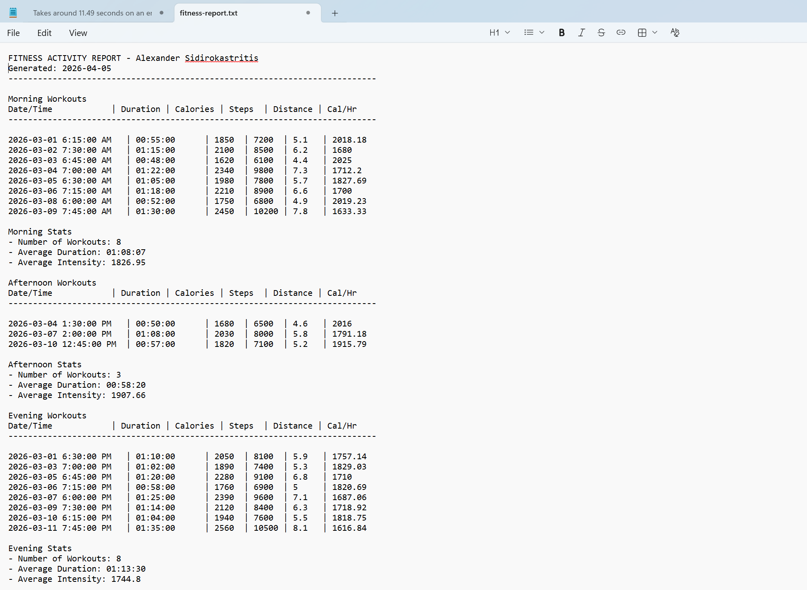

Console App Fitness Tracker
Programming II Assignment
Notepad


This one is a pretty novel program I built. You can give it sample data in a specific format, and it returns either a printed list of workouts in the program itself, or saves this list to a .txt file. It's pretty helpful, and it aligns with my goal of making something that helps a lot of people. So, that's why it's featured here!